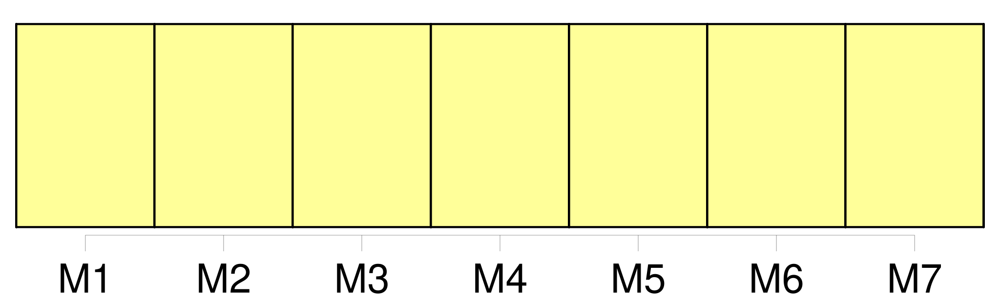
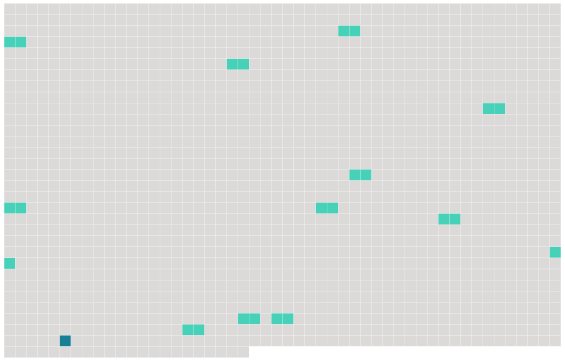

Longueur nb maillons : 13 mentions |
  |
Toute entité de pêche dont les navires ont pêché des stocks de poissons visés par la présente convention à un quelconque moment au cours des quatre ans ayant précédé l'adoption de la présente convention peut exprimer son engagement ferme à respecter les dispositions de la présente convention et à observer toute mesure de conservation et de gestion adoptée en vertu de celle -ci :
[Le dépositaire] fournit dans les meilleurs délais copie de cette communication à tous les signataires et parties. [3 phrases]
Toute entité de pêche susvisée peut exprimer son engagement ferme à respecter les dispositions de la présente convention si elle était amendée conformément à l'article XXXIV ou à l'article XXXV de la présente convention par le biais d'une communication écrite adressée à cette fin [au dépositaire] , conformément à la résolution visée au paragraphe 1 du présent article. [5 phrases]
La présente convention entre en vigueur quinze ( 15 ) mois après le dépôt auprès [du dépositaire] du septième instrument de ratification, d'acceptation, d'approbation ou d'adhésion des parties à la convention de 1949 qui étaient parties à cette convention à la date à laquelle la présente convention a été ouverte à la signature. [7 phrases]
Dès l'entrée en vigueur de la présente convention, toute partie à la convention de 1949 qui n'a pas encore accepté d'être liée par la présente convention est réputée demeurer membre de la Commission, sauf si une telle partie décide de ne pas rester membre de la Commission en notifiant par écrit cette décision [au dépositaire] avant l'entrée en vigueur de la présente convention. [3 phrases] Conformément à ses lois et règlements, un État ou une organisation régionale d'intégration économique qui satisfait aux exigences de l'article XXVII ou de l'article XXX de la présente convention peut appliquer provisoirement la présente convention en notifiant par écrit son intention [au dépositaire]
Cette application provisoire commence à la date d'entrée en vigueur de la présente convention ou à la date de réception de ladite notification par [le dépositaire] , si celle -ci est postérieure. [1 phrases]
L'application provisoire de la présente convention par un État ou une organisation régionale d'intégration économique visée au paragraphe 1 du présent article prend fin dès l'entrée en vigueur de la présente convention pour cet État ou cette organisation régionale d'intégration économique, ou dès la notification [au dépositaire] par cet État ou cette organisation régionale d'intégration économique de son intention de mettre fin à son application provisoire de la présente convention. [7 phrases]
Les amendements à la présente convention entrent en vigueur quatre-vingt-dix ( 90 ) jours après que toutes les parties à la convention à la date où les amendements ont été approuvés aient déposé auprès [du dépositaire] leurs instruments de ratification, d'acceptation ou d'approbation de tels amendements. [12 phrases] Toute partie peut se retirer de la présente convention à tout moment au terme de douze ( 12 ) mois à compter de la date à laquelle la présente convention est entrée en vigueur pour cette partie, en notifiant par écrit son retrait [au dépositaire] [Le dépositaire] informe les autres parties du retrait dans un délai de trente ( 30 ) jours à compter de la réception de cette notification.
Le retrait devient effectif six ( 6 ) mois après la réception de ladite notification par [le dépositaire] [2 phrases]
Article XXXVII : [Dépositaire] |
 |
La ressource peut être téléchargée sur la page Ortolang
Si vous avez des questions ou vous voyez des erreurs, merci d'envoyer un mail à silvia.federzoni89@gmail.com
Site développé par S. Federzoni (contact)